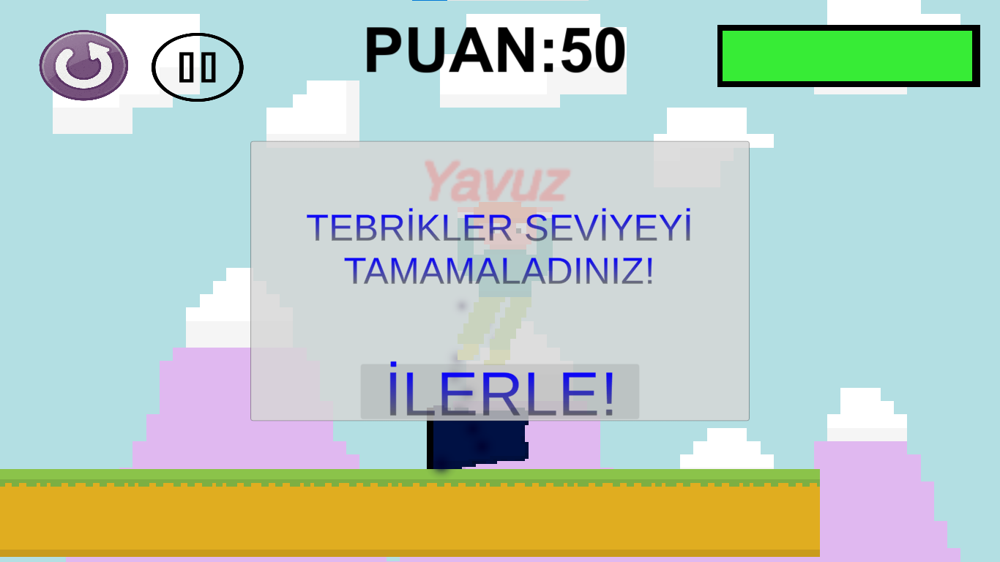
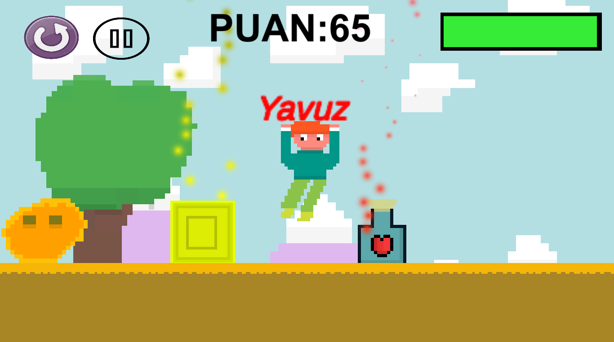

Casual Platformer
Bu oyun benim karantina döneminde evde boş boş oturmaktan sıkılıp Arduino'ya başlamam ve sonrasında kodlama üzerinden devam etmek istememin ilk sonucu.
Oyunda basit bi platformer oyununda olan;
Farklı engeller,seviyeler, market sistemi, ödül sistemi mevcut.
Bunu amatör bir oyun geliştiricisinin ilk emeği olarak oynayın ve ufak tefek sorunları görmezden gelin lütfen 👉👈 (görsellerin yarısının piksel yarısının vektörel olması gibi küçük sorunlar:)

Oyunu yüklemek için linke tıklayıp "Download" butonuna basın



